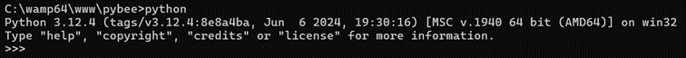

Précédent : VI. Packages | Index | Suivant : VIII. Beetle sur le web
Avec Beetle, vous allez pouvoir taper vos commandes dans un terminal. Voici une illustration de la console quand vous la lancez pour la première fois :
C:\wamp64\www\pybee>python beetle.py
ooooooooooooooooooooooooooooooooooooooooooooooooooooooooooooooooooooooooooooooooooooooooooo
ooooooooooooooooooooo .---- .----- .----- ---.--- . .----- ooooooooooooooooooo
oooooooooooooooooooo // / // // // // // oooooooooooooooooooo
ooooooooooooooooooo //--- //--- //--- // // //--- ooooooooooooooooooooo
oooooooooooooooooo // / // // // // // oooooooooooooooooooooo
ooooooooooooooooo //___/ //____ //____ // //_____ //____ ooooooooooooooooooooooo
ooooooooooooooooooooooooooooooooooooooooooooooooooooooooooooooooooooooooooooooooooooooooooo
---- Interpreter version : v2.3.5 -- Console version : v1.0.6 -- Core version : v1.5.4 ----
---- Current date : 02/13/2025 14:39:27 ---------------------------------------------------
ooooooooooooooooooooooooooooooooooooooooooooooooooooooooooooooooooooooooooooooooooooooooooo
Beetle> |
La commande qu'il faut lancer dans le terminal pour lancer Beetle est :
C:\...>python beetle.py
'Beetle> ' est le prompt de la console.
La console est une boucle infinie sur la fonction input qui vous permet de taper vos commandes. Les commandes ou mots que vous taper dans la console sont insensibles à la casse.
Ce manuel va utiliser cette console pour illustrer les mots de votre langage. C'est exactement le même principe que la console de Python. Voici la console de Python :
Vous devez taper quit() pour en sortir.
Dans Beetle, il existe un mot simple pour sortir de la console : 'bye' Essayer de taper 'bye' dans la console : vous allez immédiatement sortir de la console. Voici ce que cela donne :
C:\wamp64\www\pybee>python beetle.py
ooooooooooooooooooooooooooooooooooooooooooooooooooooooooooooooooooooooooooooooooooooooooooo
ooooooooooooooooooooo .---- .----- .----- ---.--- . .----- ooooooooooooooooooo
oooooooooooooooooooo // / // // // // // oooooooooooooooooooo
ooooooooooooooooooo //--- //--- //--- // // //--- ooooooooooooooooooooo
oooooooooooooooooo // / // // // // // oooooooooooooooooooooo
ooooooooooooooooo //___/ //____ //____ // //_____ //____ ooooooooooooooooooooooo
ooooooooooooooooooooooooooooooooooooooooooooooooooooooooooooooooooooooooooooooooooooooooooo
---- Interpreter version : v2.3.5 -- Console version : v1.0.6 -- Core version : v1.5.4 ----
---- Current date : 02/13/2025 14:39:27 ---------------------------------------------------
ooooooooooooooooooooooooooooooooooooooooooooooooooooooooooooooooooooooooooooooooooooooooooo
Beetle> bye
Have a good day! See you later...
C:\wamp64\www\pybee>
Précédent : VI. Packages | Index | Suivant : VIII. Beetle sur le web